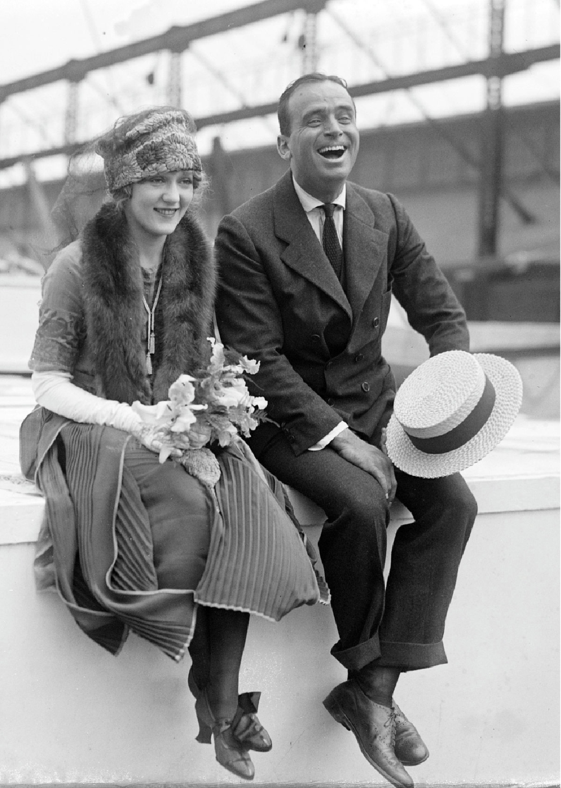

De twee periodes liggen 50 jaar uit
elkaar. In die velen jaren hebben er
veel ontwikkelingen en veranderingen
plaats gevonden.
Als je inzoomt op de mode van jaren
70, zie je een duidelijk verschil. De
lengte van de rok is omhooggegaan,
de silhouetten zijn allemaal wat
strakker gaan zitten. In het eerste
opzicht is het van een fatsoenlijke
kledingstijl, naar vrij uitdagend
gegaan. Hier zijn natuurlijk wat jaren
overheen gegaan.
Al is er in de kledingstijl tegelijkertijd
ook een overeenkomst te vinden,
maar deze gaat meer over de
gedachtegang achter de kleding van
de vrouwen.
Vrouwen in de jaren twintig begonnen
zich af te zetten tegen, wat in die tijd
als normaal werd gezien. De ju-
rklengte was voorheen tot aan de
enkel en deze ging een stuk omhoog,
al bleef deze nog wel veilig onder de
knie. De silhouetten van de jurken
werden meer jongensachtig, als reac-
tie op de strakke korsetten van de
jaren ervoor. En de haren gingen kort,
alle vrouwen droegen massaal een
boblijn.
Dit werd ook wel garçonne stijl ge-
noemd. Een belangrijke ontwerpster
uit die tijd was Coco Chanel. Deze
afzetting tegen de regels uit die tijd, is
nog steeds kenmerkend voor de
jaren
20.